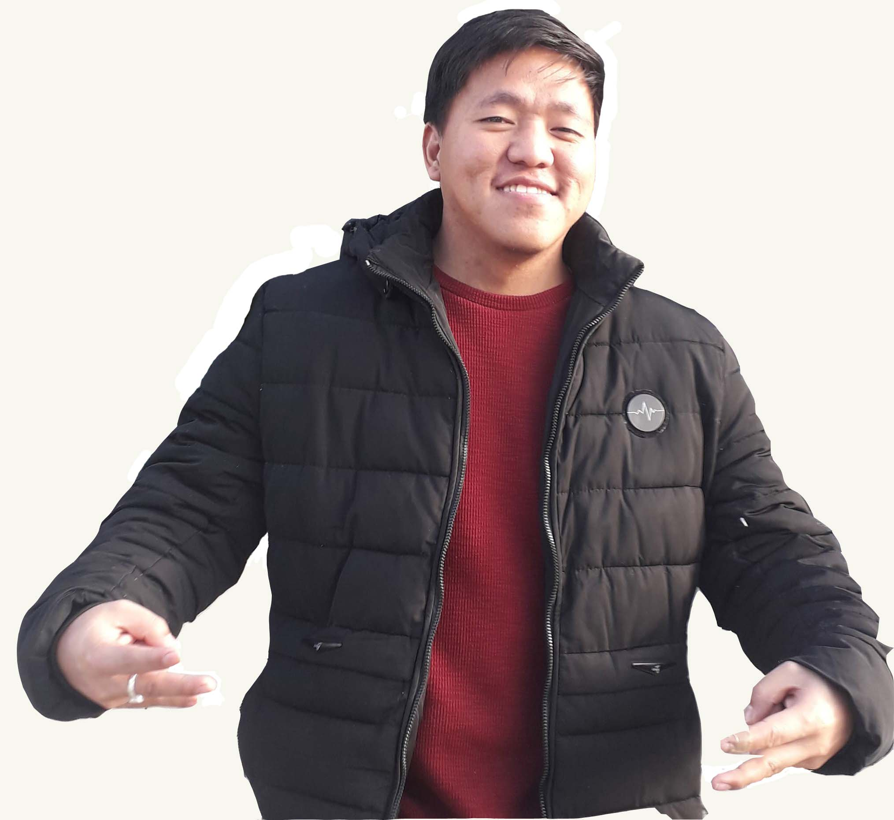
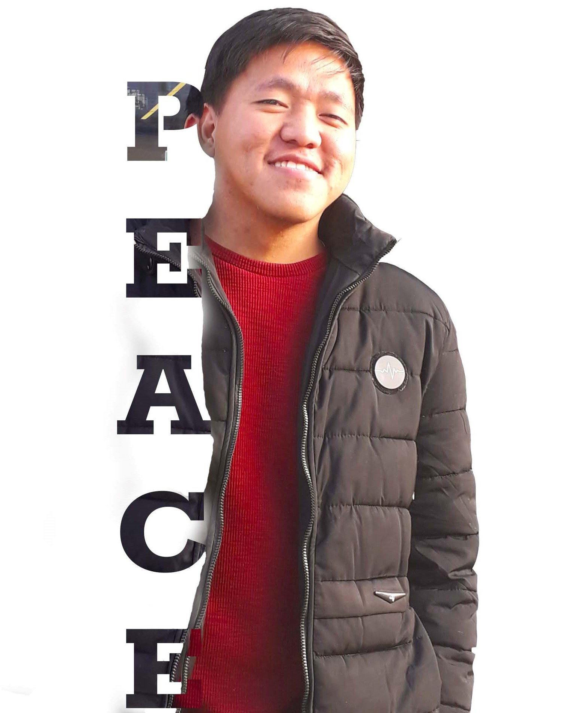

Current affairs of my life
Hi there i am jugal limbu all the way from Nepal.Currently i moved to Denmak to pursue my further education. About my education i am currently studying MMD programme at KEA in 1st semester. I am hoping to learn the new thing and try to cope with the new things.
Hobbies
Right now i am trying to totally focusing on my study. But whenever i got time i love to watch movies, playing football and if i got a little bit of more time then i would love to travel mainly the old historic place which have carried the long history along with it. Most importantly i would like to be active and try to be useful in the society.